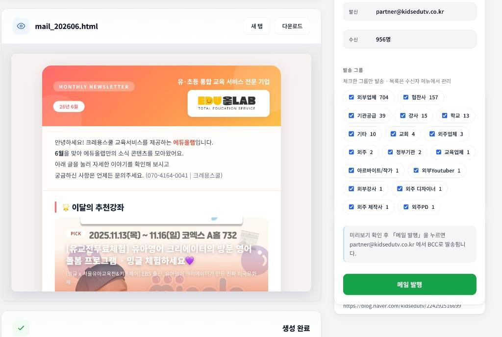
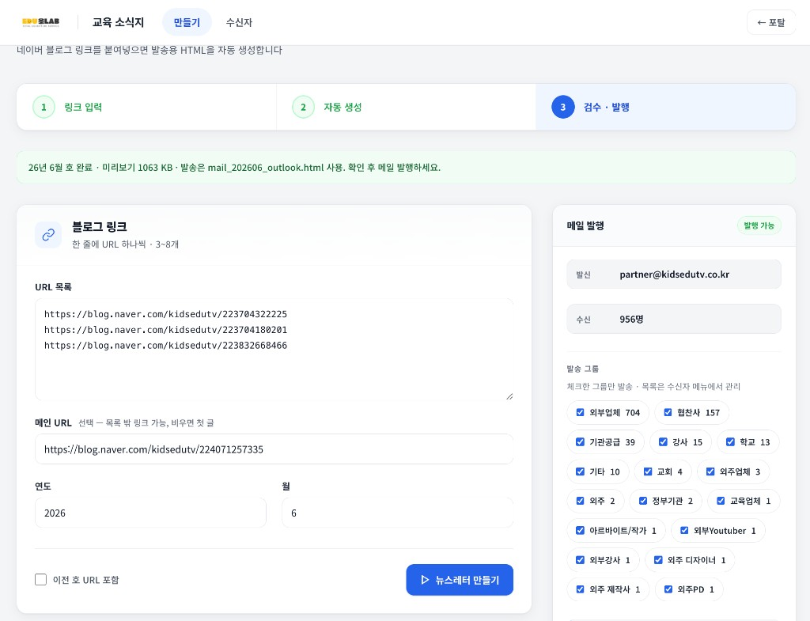
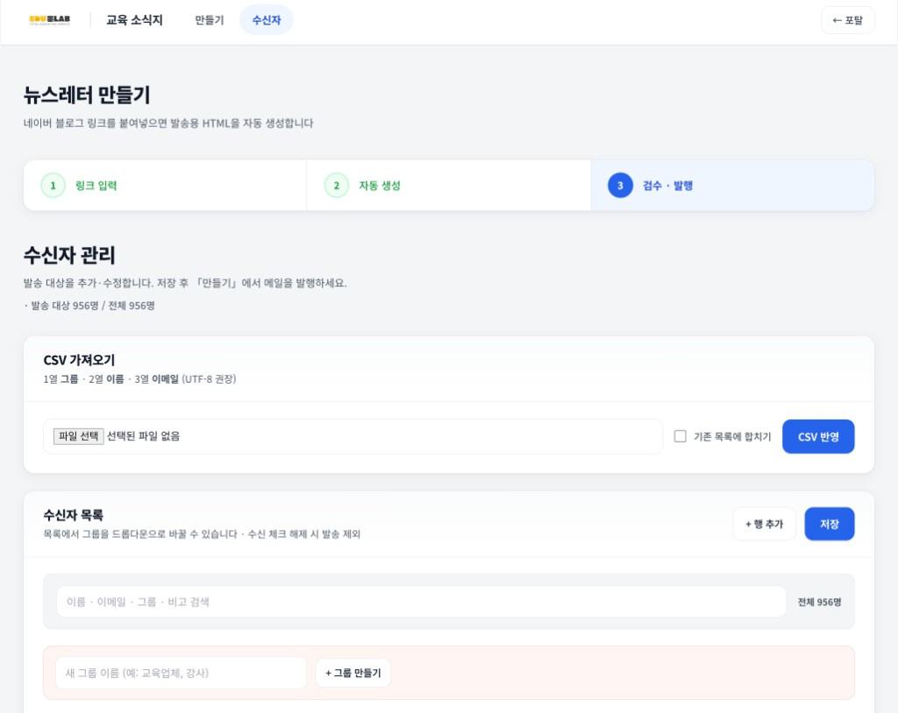
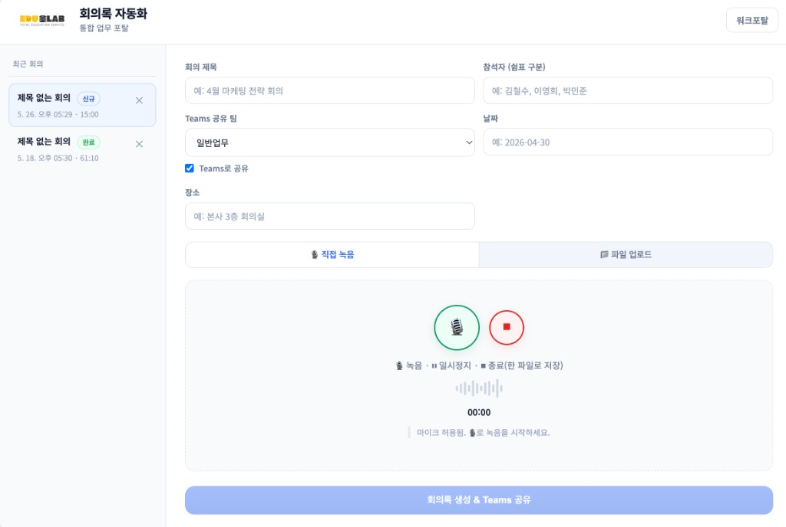

뉴스레터 발송 서비스 쉽고 편리한 사용 설명서
네이버 블로그를 기반으로 고품질 소식지를 자동 생성하고, 안전하게 대량 발송하는 에듀올랩 통합 솔루션 매뉴얼입니다.
에듀올랩 뉴스레터 플랫폼 소개
에듀올랩 교육 소식지 플랫폼은 "네이버 블로그의 글 주소들을 입력하면 소식지(뉴스레터) 화면으로 자동 변환해 주며, 사전에 등록된 주소록 그룹원들에게 한 번에 대량으로 이메일을 안전하게 발송할 수 있는 통합 소식지 발송 서비스"입니다.

· 발신:
partner@kidsedutv.co.kr (에듀올랩 공식 계정)· 수신: 체크된 그룹 합계 인원 (예: 956명)
안내 문구대로 partner@kidsedutv.co.kr에서 BCC(숨은 참조)로 발송되므로 수신자끼리 이메일 주소가 노출되지 않습니다.
매번 수동으로 복잡하게 이메일 화면을 직접 만들거나 문구를 정리하던 번거로운 반복 작업을 획기적으로 줄여주며, 클릭 몇 번만으로 깔끔하게 정돈된 고품질 소식지를 손쉽게 만들어 배포할 수 있습니다.
1단계. 뉴스레터 자동 생성
네이버 블로그 링크 수집과 발행 주기를 설정하여 뉴스레터 화면을 1초 만에 뚝딱 만드는 단계입니다.
👆 화면 위 번호를 클릭하면 각 영역 설명이 표시됩니다

https://blog.naver.com/...)을 통째로 복사하세요.텍스트로 자세히 보기
-
블로그 링크 목록 입력:
만들기 화면의 URL 목록에 네이버 블로그 링크 주소들을 입력합니다. 한 줄에 하나의 링크 주소만 들어가도록 엔터 키로 분리하여 최소 3개에서 최대 8개까지 삽입할 수 있습니다.
주소 복사 미세 팁인터넷 브라우저 맨 위의 주소창(예:https://blog.naver.com/...)을 통째로 복사해서 그대로 붙여넣어 주세요! 주소가 일부만 복사되면 시스템이 정보를 읽어오지 못할 수 있습니다. -
대표 배너 지정 (선택사항):
소식지 맨 위에 가장 크게 보일 대표 메인 글 주소를 하나 지정합니다. 일반 웹페이지 주소도 가능하며, 이 칸을 비워두면 블로그 목록 중 첫 번째 링크가 자동으로 대표 배너 글이 됩니다.
-
발행 월호 설정 및 중복 발송 방지:
해당 뉴스레터의 연도와 월을 지정합니다.
이전 호 중복 발송 방지 스마트 기능에듀올랩 시스템은 해당 연/월에 이미 발행해서 보냈던 블로그 링크 주소들을 안전하게 기억하고 있습니다. 따라서 실수로 과거에 보냈던 블로그 글 주소를 다시 입력하더라도 자동으로 제외 처리해 주어, 수신자에게 중복된 메일이 중복 발송되는 사고를 원천 방지합니다. 예전 콘텐츠를 다시 활용해야 할 때만 [이전 호 URL 포함] 체크박스를 켜주시면 됩니다. -
뉴스레터 만들기 실행:
하단의 [뉴스레터 만들기] 버튼을 누르면 이메일 화면이 바로 만들어집니다.
2단계. 미리보기 및 검수
뉴스레터 화면 제작이 완료되면 미리보기 화면이 활성화되어 이메일이 깔끔하게 잘 조립되었는지 검수하는 단계입니다.
👆 화면 위 번호를 클릭하면 각 영역 설명이 표시됩니다
mail_202606.html 미리보기에서 배너·본문·이미지·오탈자를 확인합니다. 실제 발송 화면과 동일하게 표시됩니다.텍스트로 자세히 보기
-
실시간 화면 검수:
좌측 미리보기 화면에서 이메일이 실제로 발송되었을 때 어떻게 보이는지 실시간으로 확인합니다. 이미지 크기, 글씨 정렬 상태 등을 꼼꼼하게 체크하세요.
-
새 창에서 시원하게 크게 보기:
상단의 [새 탭] 버튼을 누르면 브라우저 새 창에서 시원하고 큰 전체 화면으로 메일 화면을 구석구석 다시 살펴볼 수 있습니다.
-
이메일 본문 파일 저장:
상단의 [다운로드] 버튼을 누르면 자동으로 다 만들어진 뉴스레터 이메일 본문 파일(.html)이 관리자 컴퓨터로 즉시 저장됩니다.
3단계. 수신 주소록 가져오기
뉴스레터를 받아볼 고객들의 이메일 주소록 목록을 만들고, 소속 그룹별로 편리하게 분류하여 관리하는 단계입니다.
👆 화면 위 번호를 클릭하면 각 영역 설명이 표시됩니다

텍스트로 자세히 보기
-
엑셀(CSV) 주소록 파일 가져오기:
연락처 엑셀 파일을 업로드해 수백 명의 수신인 정보를 클릭 한 번으로 빠르게 등록합니다.
한글 깨짐 해결 방법 (필독!)주소록 파일을 업로드했는데 한글 이름이 물음표(?)나 깨진 글자로 표시된다면, 상단에 빨간색 안내창이 표시됩니다.
[해결 3단계 순서]
- 작업 중인 엑셀 파일에서 좌측 상단 [파일] 탭 클릭
- [다른 이름으로 저장] 클릭
- 파일 형식을 반드시 [CSV UTF-8 (쉼표로 분리)(*.csv)]로 선택 후 저장한 다음, 이 파일을 새로 업로드해 주세요!
-
수신 그룹 지정 및 분류:
새 그룹 이름 입력창에 원하는 그룹(예:
학부모,파트너사,교사풀)을 넣고 [+ 그룹 만들기]를 누르면 주소록 탭이 새롭게 생겨납니다. -
메일 발송 여부 개별 제어:
이메일 목록 표 왼쪽의 [수신] 체크박스를 해제하면, 해당 고객은 주소록 목록에 그대로 두면서도 이번 발송 대상에서만 간편하게 제외할 수 있습니다.
4단계. 최종 메일 대량 발송
마지막으로 완벽하게 검수가 완료된 뉴스레터를 대상 그룹원들에게 한 번에 안전하게 대량 발송하는 최종 단계입니다.
👆 화면 위 번호를 클릭하면 각 영역 설명이 표시됩니다
partner@kidsedutv.co.kr · 수신 체크된 그룹 합계(예: 956명). BCC 발송 안내 문구를 확인하세요.텍스트로 자세히 보기
-
공식 발송 정보 확인:
만들기 탭 우측 메일 발행 패널 상단에서 발행 가능 배지, 발신 계정(
partner@kidsedutv.co.kr), 수신 인원(예: 956명)을 확인합니다. -
뉴스레터를 수령할 발송 그룹 선택:
발송 그룹 메뉴에서 이번 뉴스레터를 전송할 그룹들을 체크박스로 다중 선택합니다. 체크를 해제한 그룹은 메일을 받지 않습니다.
-
안전한 숨은 참조(BCC) 대량 발송 실행:
[메일 발행] 버튼을 누르면 최종 발송을 묻는 팝업 확인창이 표시됩니다.
개인 정보 보호 자동 발송 기술 적용메일을 발송할 때 시스템이 자동으로 모든 수신자를 **숨은 참조(BCC)**로 처리하여 메일을 발송합니다. 수신자들이 서로의 이메일 주소를 절대 볼 수 없도록 완벽하게 보안이 보호되므로, 개인 정보 유출 우려 없이 마음 편히 클릭하셔도 좋습니다.
실수 제로! 뉴스레터 발송 전 자가 점검표
중요한 뉴스레터를 대량으로 보내기 전에 실수가 없는지 직접 체크해 보세요. (마우스로 항목을 클릭하면 완료 처리됩니다!)
-
네이버 블로그 글 주소(링크)가 최소 3개에서 8개 사이로 잘 구성되어 있나요?
-
이번에 보내는 '연도'와 '월호' 정보가 올바르게 선택되었나요?
-
미리보기 화면 및 [새 탭] 보기로 메일 레이아웃과 오탈자가 없는지 검수하셨나요?
-
업로드한 주소록 엑셀 파일(CSV)에 한글 이름이 깨지지 않고 정상 표시되나요?
-
보내고 싶지 않은 수신 대상의 [수신] 체크박스는 정상적으로 해제하셨나요?
자주 묻는 질문 (FAQ)
사용자분들이 뉴스레터 서비스를 이용하면서 가장 많이 하시는 질문들을 모았습니다.
회의록 자동화 서비스 쉽고 편리한 사용 설명서
음성 녹음 및 녹음 파일 업로드를 기반으로 회의록 요약문과 텍스트를 인공지능이 자동 생성하고 Microsoft Teams에 자동 공유해주는 에듀올랩 통합 솔루션 매뉴얼입니다.
에듀올랩 회의록 자동화 플랫폼 소개
에듀올랩 회의록 자동화 플랫폼은 "실시간 회의 녹음 또는 소지하신 녹음 파일들을 업로드하면 AI가 사람들의 음성을 고성능으로 분석(STT)하여 한글 회의록 요약문으로 자동 생성하고, 협업 메신저인 Microsoft Teams에 실시간으로 자동 공유 및 보관해주는 비서 솔루션"입니다.

회의가 끝난 후 누군가 전담하여 몇 시간 동안 타자를 치며 회의 내용을 요약하고 전사하던 불필요한 번거로움을 획기적으로 없애주며, 오디오가 여러 파일로 분할되어도 드래그 앤 드롭으로 간편하게 병합할 수 있습니다.
1단계. 회의 메타 정보 입력
생성될 회의록 요약문의 제목과 식별 정보를 사전에 명시하여, 협업 툴(Teams)과 관리 내역에서 쉽게 찾아볼 수 있도록 뼈대를 잡는 단계입니다.
👆 화면 위 번호를 클릭하면 각 영역 설명이 표시됩니다
텍스트로 자세히 보기
-
회의 제목 및 날짜/장소 기입:
이메일 및 사내 회의록 대장에 기록될 회의 성격에 맞게 [회의 제목], [날짜], [장소]를 입력합니다.
※ 예시:
4월 마케팅 전략 회의,2026-06-02,본사 2층 대회의실 -
참석자 목록 입력:
회의에 실제 자리한 멤버들을 쉼표(,)로 구분하여 [참석자]란에 차례대로 채워 넣습니다. AI가 이 텍스트 정보를 바탕으로 문맥의 핵심 발화자들을 구분하는 기초 정보로 활용합니다.
-
결과를 실시간 공유받을 사내 Teams 채널 선택:
에듀올랩은 각 업무 영역별로 구분된 [Teams 공유 팀]을 선택할 수 있는 드롭다운 메뉴를 지원합니다. 회의록 분석이 완료되는 즉시 해당 협업 채널로 요약 텍스트가 알림과 함께 배달됩니다.
선택 가능한 주요 부서 채널교육개발 / 주문제작 / 영업마케팅 / 크레용스쿨 / 플랫폼머즈 / 콘텐츠제작 / 쇼핑몰 / 디자인개발 / 일반업무 중 관련성이 가장 깊은 팀을 골라주세요. 지정하지 않거나 기본값은[일반업무]채널로 공유됩니다.
2단계. 음성 녹음 및 파일 준비
회의장에서 노트북 등으로 바로 받아적으며 실시간 직접 녹음하거나, 외부 녹음기/스마트폰으로 녹음한 오디오 파일을 등록하는 핵심 단계입니다.
👆 화면 위 번호를 클릭하면 각 영역 설명이 표시됩니다

텍스트로 자세히 보기
-
방법 A. 실시간 마이크 '직접 녹음' 기능:
[🎙️ 직접 녹음] 탭을 누른 후 마이크 모양(🎙️) 버튼을 클릭하면 녹음이 실행됩니다. 이때 마이크 권한 요청창이 뜨면 브라우저 상단에서 반드시 [허용]을 클릭하셔야 합니다.
회의 도중 쉬는 시간이 생기거나 자료 배포 시에는 일시정지(⏸) 버튼을 누르고, 다시 이어서 녹음할 때는 재생(▶) 버튼을 활용하세요. 회의가 모두 끝나면 네모 모양(⏹) 정지 버튼을 눌러 정식 파일로 보관함에 즉시 축적합니다.
-
방법 B. 기존에 촬영/녹음된 '파일 업로드' 기능:
스마트폰이나 다른 기기에서 저장한 회의 음성 파일이 있는 경우 [📁 파일 업로드] 탭을 눌러 점선 박스 안으로 끌어다 놓거나 상자를 클릭하여 다중 파일을 일괄 탑재합니다. (지원 포맷:
m4a,mp3,wav,caf등) -
스마트 오디오 파일 자동 병합 기능:
회의 도중 녹음이 끊겨서 파일이 **여러 개로 나뉘어 저장**되었더라도 아무 걱정 마세요! 여러 오디오 파일을 순서대로 주르륵 올린 후, 목록 우측의 위(↑) / 아래(↓) 버튼을 조절하여 실제 재생 시간에 맞게 정렬하면, AI 서버가 차례대로 합쳐서 하나의 완성형 통합 회의록으로 제작해 줍니다.
안정적인 전송을 위한 단일 파일 한도 안내개별 등록하는 음성 파일 한 개의 제한 용량은 최대 1,024MB (1GB)입니다. 오디오 음량 및 데이터 손상을 예방하기 위해 기준치를 초과하는 긴 오디오의 경우 부분 분할하여 올려주시는 것이 안전합니다.
3단계. AI 회의록 분석 및 공유
대용량 오디오 파일을 전송하고 AI 서버가 실시간으로 분석하여 요약본과 텍스트를 구성하는 전 과정과 진행 상황 확인법입니다.
👆 화면 위 번호를 클릭하면 각 영역 설명이 표시됩니다
텍스트로 자세히 보기
-
초고속 쪼개기(청크) 보안 업로드 실행:
하단의 [회의록 생성 & Teams 공유] 버튼을 클릭하면, 브라우저가 오디오 데이터를 약 500KB 크기 단위로 쪼개어 서버로 신속하고 안전하게 부분 전송합니다. 진행 표시줄에 업로드 퍼센트와 파일 개수가 실시간 표기됩니다.
-
실시간 AI 작업 진행 상태 확인:
업로드 완료 후 인공지능 분석이 순서대로 실행됩니다. 진행 상태창을 통해 현재 AI가 어떤 연산을 처리하고 있는지 생생히 모니터링할 수 있습니다.
프로세스 상세 상태 명칭 정의- 대기열 등록 (queued): 순번 대기 상태
- 오디오 분할 (chunked): 음성 변환에 맞게 미세 재단하는 과정
- 텍스트 변환 (stt): 오디오 음성을 한글 텍스트 대본으로 즉시 딕테이션하는 단계
- 회의록 생성 (summarize): AI 엔진이 텍스트 대본 전체를 검토해 주요 내용과 안건을 요약하는 핵심 단계
- Teams 공유 처리 (teams): 정리 완료된 요약본을 사내 Teams 메신저로 쏴주는 최종 연동 절차
-
회의록 최종 완성 및 음질 경고 알림:
모든 단계가 끝나면 하단 [자동 생성된 회의록] 상자에 최종 요약문 텍스트가 시원하게 출력되며 [Teams에 공유됨] 뱃지가 노출됩니다.
이때 회의장 주변 마이크 소음이 너무 심했거나 멀리서 말하는 작은 속삭임으로 인해 음향 데이터가 부실했던 경우, 텍스트 상단에 [품질 경고] 문구가 노출되니 해당 부분은 회의 참석자가 직접 한 번 더 텍스트를 눈으로 훑어보며 가볍게 정리해주면 최고입니다!
4단계. 최근 회의 히스토리 관리
매번 옛날 회의록을 찾으러 가거나 Teams를 뒤질 필요 없이, 본인 브라우저 내에서 과거 발자취를 즉시 호출하는 수리 보관함 활용법입니다.
👆 화면 위 번호를 클릭하면 각 영역 설명이 표시됩니다
텍스트로 자세히 보기
-
브라우저 자동 저장 히스토리 활용:
회의록 플랫폼 좌측 사이드바에는 [최근 회의] 목록이 표시됩니다. 브라우저 로컬 저장 기능에 보존되며 본인이 생성하고 검토했던 회의 목록을 **최대 50개**까지 영구 저장해 줍니다.
-
원클릭 로드 및 복사:
최근 회의 목록에서 특정 안건 제목을 마우스로 살짝 누르면, 우측 메인 대시보드 화면에 작성 당시 입력했던 참석자, 날짜, 장소는 물론 AI 요약 텍스트까지 즉시 1초 만에 깔끔하게 되살아납니다.
-
안전한 보관함 정리 (삭제):
사이드바 회의 목록에 마우스 커서를 올리면 우측에 자그맣게 표시되는 **삭제 버튼(✕)**을 클릭해 쓸모없어진 가짜 정보나 테스트 내역 등을 편리하게 제거하고 쾌적하게 비워둘 수 있습니다.
실수 제로! 회의록 생성 전 자가 점검표
중요한 회의 내용을 녹음하고 AI에 요약시키기 전에 실수가 없는지 직접 체크해 보세요. (마우스로 항목을 클릭하면 완료 처리됩니다!)
-
직접 녹음할 경우, 브라우저 상단 마이크 권한 [허용]을 정상으로 클릭해 주셨나요?
-
회의의 문맥 정보 파악이 용이하도록 회의 날짜, 장소, [참석자] 목록을 예쁘게 기입하셨나요?
-
요약 완료 본이 전송될 Microsoft Teams 수신 [공유 팀]을 명확히 선택하셨나요?
-
업로드할 개별 오디오 파일의 용량이 제한 치인 1,024MB(1GB) 미만인지 체크해 주셨나요?
-
분할 오디오 파일의 경우 위(↑)/아래(↓) 화살표를 사용해 실제 흘러간 순서대로 잘 배치했나요?
자주 묻는 질문 (FAQ)
회의록 플랫폼을 이용하며 담당자분들이 많이 헷갈려하시는 질문과 해결법입니다.
E-Book 동화책 서비스 쉽고 편리한 사용 설명서
인공지능 대본-그림 매직 프롬프트를 활용하여 맑고 일관성 있는 16장의 고화질 삽화를 생성하고, 이를 정교한 이북 레이아웃으로 균등 재단/자동 합성해 주는 에듀올랩 통합 솔루션 매뉴얼입니다.
에듀올랩 E-Book 동화책 자동화 소개
에듀올랩 E-Book 동화책 플랫폼은 "동화책 제목이나 줄거리만 입력하면 AI가 동화책용 16장면 영어 대본과 일치하는 삽화 프롬프트를 빌드해 주며, ChatGPT 및 DALL-E로 획득한 16칸 그리드(4x4) 일러스트를 업로드하면 1024px HQ 화질로 자동 정밀 컷팅하고 하단에 대본 텍스트를 고품질로 렌더링/결합해주는 에듀올랩만의 디지털 동화 콘텐츠 제작 비서"입니다.

삽화 하나하나 일일이 스타일을 통일해 그리는 번거로움과, 이미지 위에 포토샵 등으로 일일이 글씨 레이아웃을 잡아주던 막노동성 편집 단계를 원클릭 드래그 앤 드롭만으로 즉각 해결해 줍니다.
1단계. 방식 및 영어 난이도 설정
동화책의 기초 시나리오를 설정하고 독자의 연령대에 완벽히 호환되는 맞춤형 어휘 난이도를 제어하는 초기화 단계입니다.
👆 화면 위 번호를 클릭하면 각 영역 설명이 표시됩니다

인어공주, 잠자는 숲속의 공주. AI가 해당 동화의 핵심 서사를 자동으로 구성합니다.텍스트로 자세히 보기
-
생성 방식 선택 (제목 vs 완성 스토리):
동화책을 어떤 데이터로 출발시킬지 두 개의 탭 필터 중 하나를 선택합니다.
[동화 제목으로 생성]: 아이디어만 있을 때 간편하게 제목(예:
엄지공주의 모험)만 입력하면 AI가 스토리를 알아서 창작해 줍니다.[완성된 동화로 생성]: 이미 사내 기획팀에서 다듬어놓은 국문 동화 텍스트가 있을 경우, 본문 전체를 텍스트 박스에 통째로 붙여넣어 그대로 분석/번역을 유도합니다.
-
영어 학습 수준 연령대 선택:
에듀올랩 e-book은 영어 교육용 콘텐츠로 자동 가공되므로 [유치원(Kindergarten)], [초등 저학년(1~3)], [초등 고학년(4~6)]의 3개 등급을 지원합니다.
선택 등급에 맞춰 영어 문장의 길이와 난이도, 주요 구문이 교육 가이드라인에 맞추어 지능적으로 재설계됩니다.
2단계. 대본/그림 프롬프트 조립 & 생성
동화책의 뼈대인 '16장면 영어 대본(JSON)'과 '16칸 그리드(4x4) 일러스트 삽화'를 준비하는 스마트 생성 단계입니다.
👆 화면 위 번호를 클릭하면 각 영역 설명이 표시됩니다

텍스트로 자세히 보기
-
대본 프롬프트 활용 및 AI 대본 즉시 생성:
[대본 프롬프트 복사]를 누른 후 ChatGPT 웹사이트 🚀로 이동하여 대본 프롬프트를 그대로 대화창에 넣으면 AI가 16장면의 JSON 형태의 고품질 영어 대본 데이터를 만들어 줍니다.
스마트 원버튼 퀵 생성 기능 탑재웹 대시보드 상단 [OpenAI API 설정]에 본인의 API Key를 사전에 임시 보존해 두시면, 굳이 외부 사이트에 갈 필요 없이 [AI 대본 즉시 생성] 단축 버튼 클릭 한 번으로 JSON 데이터가 즉각 채워져 편리합니다. -
그림 프롬프트 복사 및 4x4 삽화 그리드 이미지 획득:
동화책의 스타일 일관성을 위해 에듀올랩 프롬프트는 "벡터 스타일, outlines 배제, 질감 배제, 16칸의 균등 만화 그리드 레이아웃" 규칙이 코드로 자동 조합되어 있습니다.
[그림 프롬프트 복사] 버튼을 누른 후 ChatGPT(DALL-E)에 입력하여 4x4 비율의 선명하고 일관성 높은 16칸 완성 삽화 그림 1장을 받아와서 관리자 컴퓨터에 저장해 주세요. ([AI 이미지 즉시 생성] 원클릭 생성도 지원합니다!)
3단계. 레이아웃 모드 지정 및 이미지 업로드
동화책의 물리적 제본 및 디지털 연출 방식에 최적화된 화면 분할 레이아웃 모델을 고르고, 16칸 그리드 이미지를 업로드하는 과정입니다.
👆 화면 위 번호를 클릭하면 각 영역 설명이 표시됩니다

텍스트로 자세히 보기
-
생성된 대본 확인:
[생성된 대본] 영역에서 ChatGPT로 받은 16장면 JSON 영어 대본이 올바르게 들어왔는지 확인합니다. 누락된 장면이 있으면 프롬프트를 다시 실행하세요.
-
제작 기획에 맞는 3종 레이아웃 모드 선택:
📄 낱장 (16장): 모바일 패드 뷰어 및 카드뉴스 연출 시 적합합니다.
📖 2장 펼침: 전통 종이 동화책 제본 기획에 최고 적합합니다.
📚 3장 펼침: 파노라마 아동 도서나 대형 브로셔 형태로 연출 시에 적합합니다.
-
16칸 그리드 이미지 업로드:
하단 드롭존에 DALL-E로 생성한 4x4 일러스트 원본을 업로드하면 자동으로 1024px HQ 분할이 적용됩니다.
4단계. 이미지 자동 재단 및 영어 대본 합성
획득한 16칸의 그리드 원본 이미지를 업로드하여 AI 시스템이 16장의 고해상도 삽화로 즉각 자동 쪼개기 및 대본과 결합해 주는 최종 출력 공정입니다.
👆 화면 위 번호를 클릭하면 각 영역 설명이 표시됩니다

텍스트로 자세히 보기
-
16칸 통 이미지 드래그 앤 드롭 업로드:
[레이아웃 모드 및 업로드] 영역의 점선 드롭존을 클릭하거나 ChatGPT에서 다운로드받은 16칸 일러스트 낱장 원본 이미지를 마우스로 끌어다 놓습니다.
-
1,024px HQ 지능형 재단 및 자동 합성:
시스템이 즉시 16칸 이미지를 16등분으로 정렬 계산하여, 외곽선이나 비뚤어짐을 잡고 1,024px 고품질 화질로 깨끗하게 단독 삽화들을 잘라냅니다.
그와 동시에 대본란에 붙여두었던 16장면 영어 대본이 각 장면에 1:1로 자동 일치 합성되어, 포토샵 편집이 전혀 필요 없는 완벽한 고화질 E-Book 동화책 16페이지가 출력 완성됩니다.
-
대본 수정 및 결과물 다운로드:
AI 동화 편집기에서 장면별 대본을 직접 수정한 뒤 [수정된 대본 저장]으로 JSON을 저장하거나, [이미지 ZIP 다운로드]로 완성 페이지를 일괄 받을 수 있습니다.
실수 제로! E-Book 생성 전 자가 점검표
아름다운 영어 동화책 한 권을 완벽하게 인쇄 및 퍼블리싱하기 전에 실수 방지 체크리스트를 점검해 보세요.
-
동화 타겟 연령에 적합한 [영어 난이도] 수준이 정교히 지정되어 있나요?
-
16칸 그림 일러스트에 이질적인 Outlines(외곽 테두리선)이나 문자 글씨가 포함되진 않았나요?
-
하단 대본 박스 안에 기입한 JSON 텍스트 형식이 누락된 장면 없이 16장면으로 딱 맞나요?
-
원하는 제본 및 뷰어 목적에 맞는 '레이아웃 모드(낱장/2장/3장)'가 정상 선택되었나요?
자주 묻는 질문 (FAQ)
동화책 서비스 사용 도중 제작 담당자분들이 많이 헷갈려하고 막히시는 사안을 명쾌히 정의했습니다.
PPT 제안서 메이커 쉽고 편리한 사용 설명서
인공지능 비전 분석을 통해 문서는 물론 교구 이미지까지 종합 분석하며, 완전한 신규 제안서 작성부터 기존 PPT 뒤에 디자인 톤을 맞춰 슬라이드를 이어붙여 병합해 주는 고성능 실서버 매뉴얼입니다.
에듀올랩 PPT 제안서 메이커 소개
에듀올랩 (EduALLab) AI Generator는 "가공되지 않은 다양한 원본 문서(PDF, DOCX, XLSX, TXT 등) 및 교구 이미지(JPG)를 종합 분석하여, 에듀올랩 고유의 수주 디자인 규격이 내장된 '독립형 고품질 HTML 웹 슬라이드'로 고속 자동 변환해 주는 통합 제안서 생성 비서"입니다.

.pptx 뒤에 동일 디자인 톤으로 슬라이드를 이어 붙입니다.투자 · 사업계획만 정식 지원되며, 그 외는 추가 지시사항으로 톤을 조정하세요.기존 PPT 제작의 틀을 깨고 1) 백지 상태에서 고성능 신규 제안서를 자동 창작하거나, 2) 작성 중이던 사내 오프라인 피피티 파일(.pptx)을 주입하고 추가 분석 자료들을 던져두면 기존 PPT와 완벽히 동일한 디자인 톤앤어조를 유지하여 꼬리를 물듯 추가 슬라이드를 자동 생성 및 병합해 내는 차세대 기능을 제공합니다.
1단계. 작업 모드 및 문서 유형 선택
제안서 생성 방식의 대전제를 결정하고 실무 제안 요구사항에 맞추어 출력 규격을 제어하는 단계입니다.
👆 화면 위 번호를 클릭하면 각 영역 설명이 표시됩니다
.pptx 뒤에 동일 디자인으로 슬라이드를 연장합니다.텍스트로 자세히 보기
-
작업 모드 (신규 생성 vs 기존 추가 병합):
[신규 제안서 생성]: 문서 원고를 바탕으로 완전히 새로운 기획서/설명서 묶음을 처음부터 생성합니다.
[기존 PPT에 추가 병합]: 작성하던 기존 완성 피피티(
.pptx) 파일을 지정 업로드하고, 추가 분석할 원시 문서를 함께 올리면 AI가 기존 디자인의 형태, 폰트 비율, 논조를 모방하여 뒤에 자동으로 추가 연장선을 병합해 줍니다. -
제안서 유형 분류 (B2B 제안서 vs 서면 보고서):
신규 생성 모드 시 제안 목적에 어울리는 최적 포맷을 고릅니다.
B2B 제안서: 세련된 슬라이드 쇼 형태의 모바일/PC 반응형 HTML 웹 슬라이드로 생성됩니다.
서면 보고서: 책자 배포 및 심사용 공식 문서 서식에 걸맞은 정갈한 줄글 형태의 공식 서면 보고서로 출력됩니다.
2단계. 제안 원고 및 멀티 파일 업로드
AI가 통찰력을 얻을 문서 데이터와 교구 실물 시각 자료(이미지)를 통합 전달하는 멀티자료 투입 단계입니다.
👆 화면 위 번호를 클릭하면 각 영역 설명이 표시됩니다

텍스트로 자세히 보기
-
텍스트와 이미지를 가리지 않는 멀티 업로드 지원:
기획 원고만 올리던 과거 방식과 달리, 교구 실물 이미지, 도표 캡처본(JPG, JPEG 등)을 원고 텍스트 파일(PDF, DOCX, XLSX)과 함께 동시에 여러 개 드래그하여 업로드할 수 있습니다.
AI 비전 모듈이 이미지를 정밀 검토하여 설명이 들어갈 최적의 슬라이드에 삽화로 유기적으로 배치해 줍니다.
-
기존 PPT 추가 병합 시 업로드 요령:
[기존 완성 PPTX 업로드] 란에 기준이 될 원본 파워포인트(
.pptx만 가능)를 지정합니다.[추가할 원천 내용 문서들 업로드] 란에 새로이 분석하여 이어서 덧붙여야 할 문고들을 올립니다.
3단계. 대상 지정 및 추가 지시(instructions) 주입
수신 대상을 선택하고, 백엔드 엔진에 내장된 에듀올랩 전용 수주 기획 및 5대 디자인 규정을 발동시키는 설정 단계입니다.
👆 화면 위 번호를 클릭하면 각 영역 설명이 표시됩니다
투자 · 사업계획만 정식 지원되며, 학교·방과후 등은 추가 지시사항으로 톤을 조정하세요.'데이터 위주로 구성해줘', '파스텔 톤 강조'. 생성 시 에듀올랩 5대 수주 디자인 규정이 자동 적용됩니다.텍스트로 자세히 보기
-
대상 고객군 타겟팅 (선택사항):
[대상 고객군] 드롭다운에서 이번 제안서 수신자 유형을 수동 지정합니다. (현재 사내 IR 및 투자 위탁용인
[투자 · 사업계획]옵션이 정식 가동 중이며, 다른 대상을 고를 시 비활성화되므로 비워두시면 AI가 문서에 맞춤형으로 자동 감지하여 처리해 줍니다.) -
에듀올랩 엔진 내장 5대 수주 및 디자인 규정:
추가 지시사항에 요구 조건을 간략히 쓰고 생성을 누르면 당사 고유의 5대 강제 수주 규칙이 슬라이드 전반에 자동 주입되어 전문가가 감수한 느낌을 자아냅니다.
반드시 기억해야 할 에듀올랩 수주 전용 5대 헌장- 에듀올랩 그레이시 블루 (#F8FAFC) 캔버스: 눈에 무리가 없는 모던하고 신뢰감 높은 배경 고정
- 대기업 위탁/IR 규격 입체 섀도우 카드 매칭: 슬라이드 내 요약 카드를 세련된 입체 카드로 렌더링
- AS-IS vs TO-BE 2단 설득 비교 카드 자동화: 수주 성공률 극대화하는 2단 비교 설득 구조 레이아웃 강제 활성화
- 12자~22자 압축 명사형 종결어미 강제 통일: 슬라이드 요약 시 끝 문장을
~함,~임같은 공적 비즈니스 어휘로 강제 종결 - 다크모드 및 이모지 사용 완벽 배제: 신뢰성 사수 및 흑백 복사 인쇄 배포 호환성 사수
4단계. 독립형 HTML 슬라이드 생성 완료
인공지능의 3단계 가동 과정을 실시간 모니터링하고 최종 완성된 명품 웹 슬라이드 독립 파일을 획득하는 단계입니다.
👆 화면 위 번호를 클릭하면 각 영역 설명이 표시됩니다
텍스트로 자세히 보기
-
3단계 실시간 상태 모니터링:
생성하기를 클릭하면 AI가 백엔드 연산을 시작합니다. 우측 생성 상태 패널에서 진행 단계를 실시간 추적하세요.
➔
1단계: 콘텐츠 및 이미지 정밀 분석— 비전 모듈이 교구 그림과 제안 원고 통합 융합➔
2단계: 디자인 자산 기반 구조 설계— 2단 비교 카드 및 입체 섀도우 배치 계획➔
3단계: HTML 인라인 슬라이드 렌더링— 브라우저에서 바로 열리는 선명한 화면 조립 -
독립형 HTML 웹 슬라이드 획득:
모든 과정이 완료되면 [웹 슬라이드 열기] 버튼이 활성화됩니다. 클릭 시 별도의 파워포인트 프로그램 없이, 모바일·패드·PC 등 모든 브라우저에서 즉시 발표 및 확대가 가능한 독립형 고화질 슬라이드 쇼가 가동됩니다.
5단계. AI 에디터 활용 및 제안서 리터칭
생성된 웹 슬라이드를 실시간 프리뷰 캔버스로 보면서, AI 어시스턴트와의 대화 및 수동 편집 폼을 통해 디자인과 내용을 세밀하게 보정하는 단계입니다.
텍스트로 자세히 보기
-
AI 대화형 리디자인 및 콘텐츠 수정:
좌측의 [AI 기획 어시스턴트] 대화창을 통해 자연어로 수정을 요청할 수 있습니다. 특정 페이지 번호를 지정하여 명령하면 AI가 해당 슬라이드의 구조와 문구를 실시간으로 변경해 줍니다.
※ 수정 지시어 예시:
"3페이지 텍스트 요약하고 3단 카드로 레이아웃 변경해줘""표지의 메인 타이틀 폰트 크기를 조금만 더 키우고 강조해줘""2페이지의 AS-IS / TO-BE 비교 카드의 그레이 배경을 좀 더 밝게 해줘"
-
직접 수동 수정 및 레이아웃 제어:
자연어 명령 대신 직접 수정을 원할 경우, [직접 수동 수정] 탭을 선택하여 폼 에디터를 활용합니다. 슬라이드의 대제목, 부제목, 카테고리 태그 및 본문 핵심 리스트 항목들을 직접 타이핑하여 반영할 수 있으며, 레이아웃 드롭다운에서
Comparison (2단 비교),Card Grid (카드형 그리드),Standard List (기본 리스트)등의 레이아웃 형식을 직접 선택하여 즉각 레이아웃을 바꿀 수 있습니다. -
세션 이미지 라이브러리 및 스마트 이미지 매칭:
[이미지 라이브러리] 영역에는 원고 문서(PDF/DOCX/PPTX)에서 AI 비전 기술로 자동 추출해낸 고품질 이미지 자산들이 표시됩니다.
이미지 합성 및 매칭 팁라이브러리 목록에 있는 특정 이미지를 클릭하면,"X페이지에 [이미지 파일명] 이미지를 매칭하고 리디자인해줘"라는 최적의 프롬프트가 대화창에 자동으로 완성되어 입력됩니다. 이 상태에서 수정 요청을 전송하면 해당 페이지 내에 교구/설명 일러스트가 아름답게 삽입 및 합성됩니다. -
원본 락(Lock) 기능 및 최종 포맷 다운로드:
리터칭을 거친 후 상단 헤더 영역에서 [에디터 켜기/끄기]를 통해 오버레이 툴들을 감추고 [발표자 모드]로 전체화면 프레젠테이션을 바로 진행할 수 있습니다. 최종 결과물은 [다운로드] 버튼을 통해 단독 실행 및 발표가 가능한 독립형 HTML 웹페이지 파일과 오프라인 편집용 일반 파워포인트(PPTX) 파일 형식 둘 다 각각 다운로드하여 소장할 수 있으며, 필요시 백엔드 엔진을 통해 PDF 보존본 파일로 변환하여 저장할 수도 있습니다.
실수 제로! PPT 제안서 생성 전 자가 점검표
중요한 늘봄/방과후학교 및 B2B 제안 위탁 사업 입찰에 투찰하기 전에 꼭 한 번씩 체크해야 할 핵심 사항입니다.
-
문장 끝맺음이 공적 입찰 문법에 어긋나지 않게 '12자~22자의 명사형 종결어미(~함, ~임)'로 깨끗하게 통일되어 있나요?
-
기존 PPT에 추가 병합(append)을 수행했을 경우, 원본 PPTX 디자인 형식이 흐트러짐 없이 뒤에 꼬리가 정상 덧붙여졌나요?
-
심사본 인쇄물 호환 및 장엄한 사내 브랜드 사수를 위해 다크배경이나 유치한 이모지가 완벽하게 금지되어 있나요?
-
교구 실물 이미지(JPG)나 핵심 통계 도표 등이 관련 슬라이드 본문에 시각적으로 조화롭게 노출되고 있나요?
자주 묻는 질문 (FAQ)
실서버를 사용하며 에듀올랩 교육 콘텐츠 팀원분들이 가장 빈번하게 문의하는 4가지 질의응답입니다.
[투자 · 사업계획]만 정식 가동 중입니다. 학교나 방과후, 돌봄센터용 제안서를 만드실 때는 드롭다운을 **'선택 안 함 (자동 감지)'**으로 비워두시고, 하단 추가 지시사항 (instructions) 입력칸에 "초등학교 늘봄학교 예산 담당자가 심사할 문서이므로 거기에 맞춰 용어와 톤을 튜닝해줘" 라고 한글로 지시해 주시면 시스템이 자동 감지 모드 하에서 완벽하게 인식해 최상의 맞춤형 늘봄 장표를 렌더링해 냅니다.